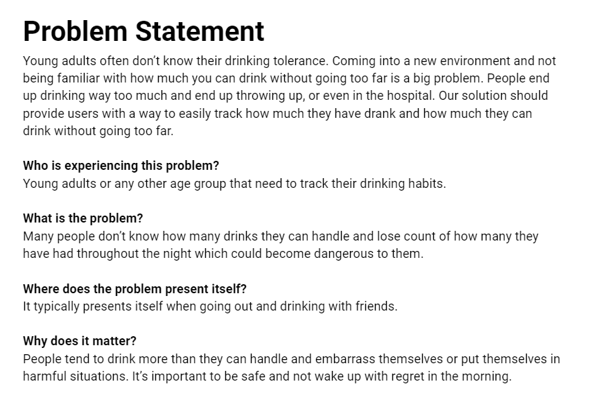
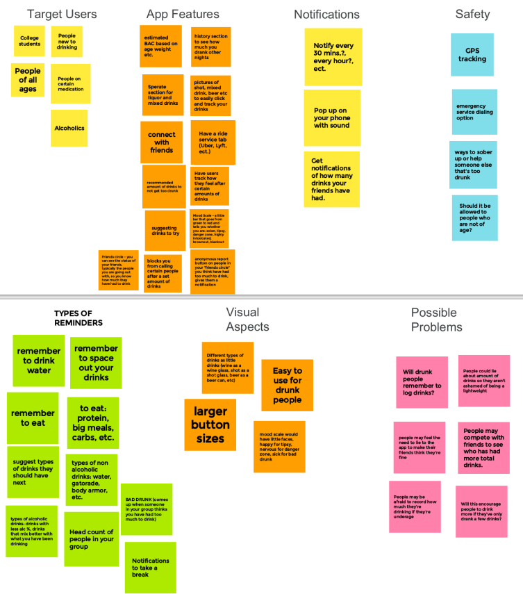
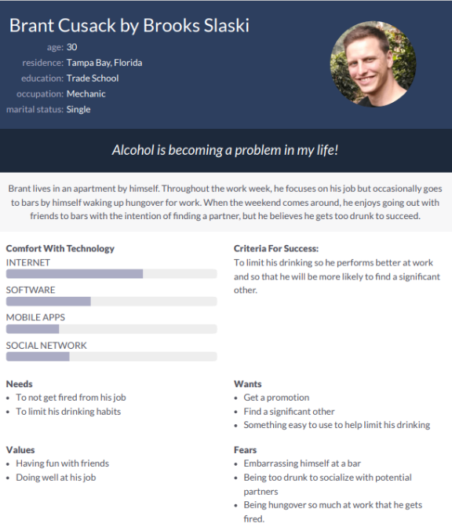
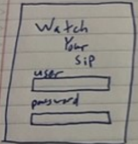
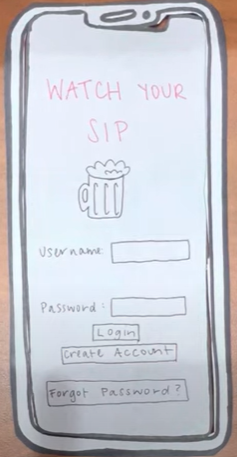

Problem Statement: Safe Drinking
Young adults often don’t know their drinking tolerance. Coming into a new environment and not being familiar with how much you can drink without going too far is a big problem. People end up drinking way too much and end up throwing up, or even in the hospital. Our solution should provide users with a way to easily track how much they have drank and how much they can drink without going too far.
Affinity Diagram: Safe Drinking
All of the ideas that my group and I brainstormed for our safe drinkning app.
Persona: Brant Cusack
A persona of a potenital user for our safe drinkning app.
Storyboard: Brant Cusack Goes to Bar with Friends

A storyboard of a potenital user using our safe drinkning app.
Sketches
Sketches of how our drinkning app could potentially look.
Sketches
Paper scenario of how each screen would look on our app.
High-Fi Protoype: Watch Your Sip

Scenario of how things would look on our app.